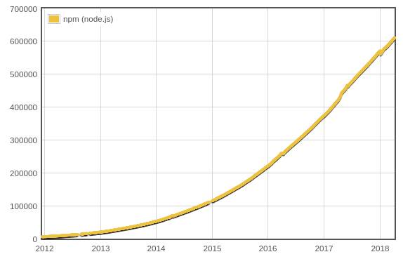
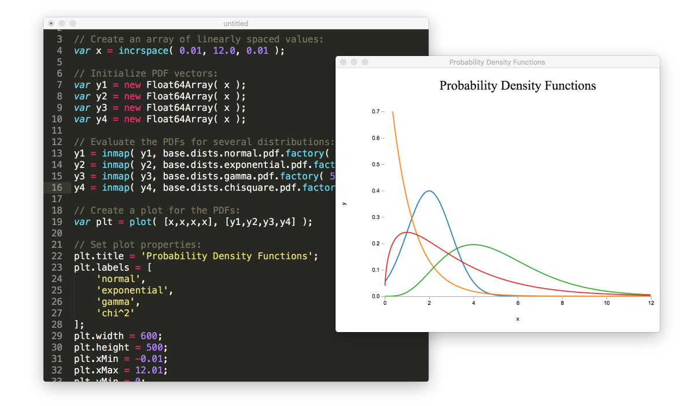
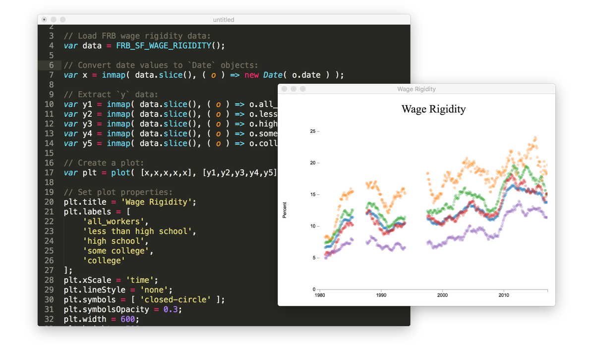
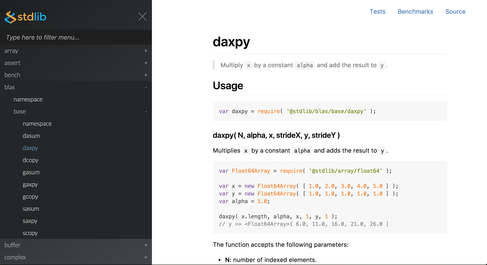
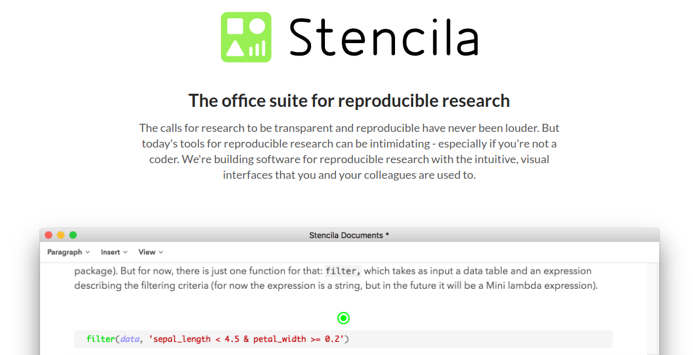
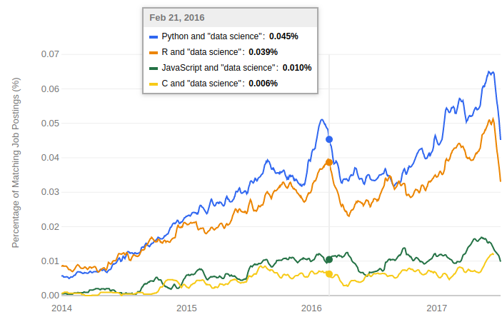
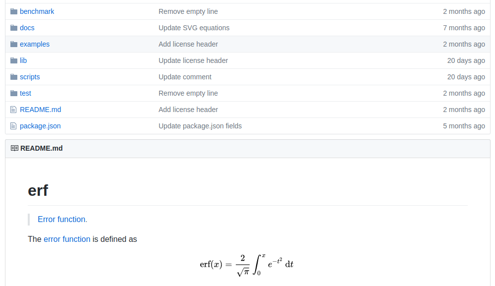

Hello everyone, my name is Philipp Burckhardt, but please don't expect too much from me: I am a statistician trained at Carnegie Mellon University and as the joke among statistician's goes, the difference between the extroverted and the introverted statistician is that the former looks at your shoes when talking to you.
An introduction to stdlib.js
Another complication: this talk is about fundamental technology,deeply rooted in programming fundamentals and mathematics. However, this may come handy to you in building your own applications, since the library I am going to talk about may abstract away painstaking routine tasks, allowing you and your team to focus on your main goals.
Why another library?
Myself, when I am confronted with some new technology, my first question always is: Why another library? One has to have a very good reason for investing the time and effort to learn something new. Every dependency one relies on is a liability, especially with the risk of people abondoning their projects or otherwise deserting them.
npm is the most popular package manager of any programming language.
Source: http://www.modulecounts.com/ (Erik DeBill)
But even if I was convinced that the library in question was a serious undertaking and not a weekend project, I would ask myself: Isn't there a comparable library already built, which might be even of better quality. As of today, the Node.js package manager offers around 700,000 packages for any imaginable task.
Downsides
package discovery
packages of varying quality
no consistent interfaces
In spite of this enormous supply, there are some serious disadvantages: First, you need to spend time to evaluate the available packages and inspect their quality as there are often multiple solutions for a given problem. Second, piecing together various utilities may cause headaches due to different interfaces that might not well play together.
I imagine that you are already using some utility libraries to make your lifes easier, be it jQuery to interact with the DOM or something like underscore or lodash to streamline common tasks. If you are interested in functiontal programming, you might have worked with ramda. Or maybe you eschew such libraries and just use the new language features that came with ES6.
Beyond the Front-End
Server programming (Node.js)
Databases (e.g., mongoDB client)
Desktop applications (electron)
Internet of Things (IoT) (Cylon.js, iot.js, JerryScript, Johnny-Five)
Due to the history of JS as a front-end language, it becomes more and more lonely the more abstract territory one enters. However, with the rise of Node.js, a lot of new applications for JS got into sight, for example server programming and command-line utilities. Popular noSQL databases use JavaScript as a scripting language in their clients, and with electron you can now build desktop applications that run on all operating systems. The Internet of Things opens new territory with smart devices, which integrate sensors and collect data that can be analyzed later on.
The JavaScript standard library is limited
Here is the point where our library comes into play. As we have seen, JavaScript offers a plethora of useful utility libraries, but in terms of fundamental building blocks, thoroughly tested and reliable mathematical routines, there are still many blank spots.
For example, my colleague Athan Reines and I were quite surprised when we found out that some of the standard Math object functions returned inaccurate results when tested against reference implementations in other languages. And while meanwhile most of these issues have been fixed, different browsers might return different results for the same function due to different algorithms.
Once again, this may be due to the history of JavaScript, where accuracy has often been traded for modest performance gains and a development which can only be characterized as mercurial.
For us, this demonstrated the need for a thoroughly tested, reliable, and well documented library that implements everything from the ground-up. That's why we built this library and are calling it stdlib.
Athan Reines and I have started development of stdlib in 2016. In the first year, we implemented around 800 functions. In 2017, almost a thousand additional functions made their way into stdlib and we are now on the brink of implementing many building blocks that will turn JavaScript into a language suitable for data science.
This field is likely to become more and more important for programmers. This gives me room for a question: Who of you has done any data analysis and data science so far? Raise your hand please. (make comment)
stdlib.js in a nutshell
utilities you would expect from a standard library
collection of robust, high performance libraries for mathematics, statistics, data processing, streams, and more
as of April 2018, stdlib.js contains almost 2,000 functions
What does stdlib contain? First, all the utilities you would expect from a standard library in another programming language. Second (...). As of today, stdlib contains almost 2,000 functions which include unit tests, benchmarks, and full documentation. For every line of source code, we write another 5-6 lines of test code and another 3-4 lines of benchmark/example code. Additionally, we have JSDoc annotations as well as README files for each function, which easily surpass the 80,000 lines of code of the library.
Overview of stdlib.js
Let me now show you what stdlib offers to you.
Probability Distributions

Seedable Pseudorandom Number Generators (PRNGs)
Datasets for testing and development

BLAS libraries, with pure JavaScript fallbacks

Current version:
Since our library is still in development, we haven't reached v1.0 yet. You can check out the GitHub repository at the above url. There, you will also find a link to our Gitter channel where you can raise any questions and concerns and we will answer them in due time.
Get stdlib.js
Option 1
Install via npm
Bundle via Webpack or browserify
What are your options right now to use stdlib? Short of cloning the GitHub repository, you may install the library from npm for both usage in Node.js applications as well as in the browser. Bundling works with both browserify or Webpack. As an alternative, we offer pre-made bundles that you can easily insert into the header of your HTML page. Besides that, there is a utility tool to generate your own bundles that only contain the parts of stdlib that you need.
stdlib.js in use
Besides individual users, there are some projects already depending on stdlib.
Development of an e-learning platform for teaching data science built on stdlib.js
At Carnegie Mellon University, we use stdlib in the Statistics & Data Science department to develop an e-learning platform for use in our courses.
Here you you see a little widget demonstrating a statistical distribution. Since stdlib is JavaScript, you can carry out all computations in real-time inside the browser instead of a server.

Another user and sponsor of stdlib is stencila, who develop an office suite for reproducible research, which features interactive spreadsheets that use stdlib for their calculations.
"See things not as they are, but as they might be"
Felix Adler
However, this is not the end of the story. Rather, it is the beginning. Since we understand this undertaking as a long-term project, we have a firm eye on how JavaScript may evolve and how new applications that were previously off-limits may become viable.
Trends
Real-time analytics and stream processing
Machine Learning, Predictive Analytics, and Artificial Intelligence in businesses
Web as the premier medium to collaborate and to share results and graphs
So let's have a look at what trends we can expect. Real-time analytics promises to change business processes across the globe: Instead of exporting a static dataset and handing it over to an introverted statistician who might look at his own shoes, data will be increasingly analyzed where it is collected.
Machine learning and predictive analytics will gain importance in daily business processes, customer service and automation of common tasks.
The rise of cloud and online services has already demonstrated that the web is becoming crucial for collaborative work.
As of now, the main players for statistical and scientific computing are languages such as R, Python, MATLAB, or Mathematica. There are also newcomers such as Julia. Although JavaScript is clearly the underdog in this game, we place our bets that it will be a competitive alternative - history has proven time and time again that JavaScript outcompeted strong rivals like Perl, Flash, and VisualBasic.
We see the shift towards the new field of data science as a great opportunity. This graph shows the different skills a future data scientist may need. I bet that most of you can relate to at least one of the skills listed here, and that you may have used JavaScript on this behalf, say by using d3.js or Plotly to generate interactive graphics.
Job Postings on indeed.com

Here you can see a job advert time series for data science jobs where JS plays a minor, but still significant role.
Stack Overflow
Among the overall developer population, JavaScript remains one of the most popular choices. In the latest Stack Overflow developer survey, it ranked first place as the most popular language and also as the second most-wanted programming language, in spite of the bad reputation the language has inherited.
stdlib.js provides building blocks for the future
On the basis of what we have already achieved, we are quite confident that our library will provide some building blocks to advance JavaScript in this domain and prepare it for the future
Design Principles
One of the fundamental questions that we have asked ourselves time and time again is: What does it need to create a good, reliable piece of technology that will resist the test of time?
Early on, we settled on a few core design principles that have shaped our development.
stdlib.js is completely decomposable
each package can consumed and understood independenlty of the project
every package maintains resource locality
First, every function in stdlib is its own package and can be used individually. This approach, which is inspired by the Unix philosophy, encourages a highly modular design that avoids lumping together functionality. This avoids unnecessary overhead, makes testing and reasoning about your code easier. All together, such an approach leads to clean, transparent, and simple user-facing APIs. It also allows the user to customize the library to his own needs.
stdlib.js is backwards compatible
support of Node.js versions starting v0.10.x.
when bundled via Webpack or browserify, code will also run in legacy browsers
stdlib.js packages are fully documented, tested, and benchmarked

Package Contents:
Examples
Benchmarks
Tests
Package and REPL documentation
Each package will be independenlty released on npm once v1.0 is reached
Custom micro-benchmarking framework
bench( 'Math.sin', function benchmark( b ) {
var x;
var i;
b.tic();
for ( i = 0; i < b.iterations; i++ ) {
x = Math.sin( Math.random() );
if ( x !== x ) {
b.fail( 'should not return NaN' );
}
}
b.toc();
if ( x !== x ) {
b.fail( 'should not return NaN' );
}
b.pass( 'success!' );
b.end();
});
Structure of a benchmark
function benchmark( b ) {
var x;
var i;
// [1] Start timing:
b.tic();
// [2] Loop containing code to time...
for ( i = 0; i < b.iterations; i++ ) {
// [3] Code to time...
// [4] A conditional verifying results to prevent certain compiler optimizations:
if ( x !== x ) {
b.fail( 'something went wrong!' );
}
}
// [5] Stop timing:
b.toc();
// [6] Another conditional verifying results to prevent certain compiler optimizations:
if ( x !== x ) {
b.fail( 'something went wrong!' );
}
// [7] End the benchmark:
b.end();
}
Output
Results are output in accordance with the Test Anything Protocol (TAP) version 13.
ok 3 benchmark success!
# hypot
---
iterations: 1000000
elapsed: 0.13120811
rate: 7621480.105155086
...
ok 4 benchmark success!
# hypot
---
iterations: 1000000
elapsed: 0.129308984
rate: 7733414.717727579
...
ok 5 benchmark success!
# hypot
---
iterations: 1000000
elapsed: 0.12404053
rate: 8061881.064197323
...
ok 6 benchmark success!
#
1..6
# total 6
# pass 6
#
# ok
iterations: number of iterationselapsed: total elapsed time beginning with b.tic() ending with b.toc() (in seconds)rate: number of operations per second
Benchmarks for JS, Julia, Python, R, and C
stdlib.js
TAP version 13
# @stdlib/random/base/randn
---
iterations: 1000000
elapsed: 0.098133603
rate: 10190189.389051577
...
ok 1 benchmark finished
# @stdlib/random/base/randn
---
iterations: 1000000
elapsed: 0.098849843
rate: 10116353.95313678
...
ok 2 benchmark finished
# @stdlib/random/base/randn
---
iterations: 1000000
elapsed: 0.099407804
rate: 10059572.38528275
...
ok 3 benchmark finished
#
1..3
# total 3
# pass 3
#
# ok
R
TAP version 13
# r::randn
---
iterations: 1000000
elapsed: 1.786431643
rate: 559775.127091163
...
ok 1 benchmark finished
# r::randn
---
iterations: 1000000
elapsed: 1.746798779
rate: 572475.783714754
...
ok 2 benchmark finished
# r::randn
---
iterations: 1000000
elapsed: 1.773366445
rate: 563899.245313622
...
ok 3 benchmark finished
#
1..3
# total 3
# pass 3
#
# ok
Unit Tests via tape
// TESTS //
tape( 'main export is a function', function test( t ) {
t.ok( true, __filename );
t.equal( typeof abs, 'function', 'main export is a function' );
t.end();
});
tape( 'the function computes the absolute value of a number', function test( t ) {
t.equal( abs( -2.0 ), 2.0, 'negative number' );
t.equal( abs( 3.0 ), 3.0, 'positive number' );
t.equal( abs( 0.0 ), 0.0, 'zero' );
t.equal( abs( -PI ), PI, 'pi' );
t.end();
});
Why tape?
No configuration, no globals, simple API
Supports standard TAP (Test Anything Protocol) output
Stats
Code Coverage: ~94% , LOC: 62,986/67,114
Continuous Integration Services:
Travis CI (Linux builds)
AppVeyor (Windows builds)
CircleCI
Intentionally left blank.